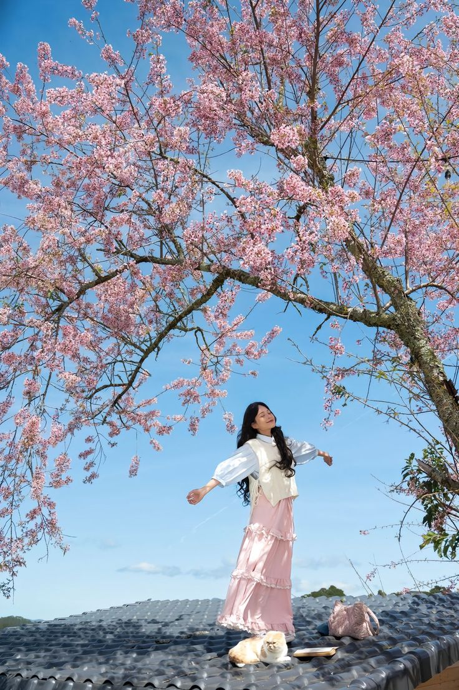
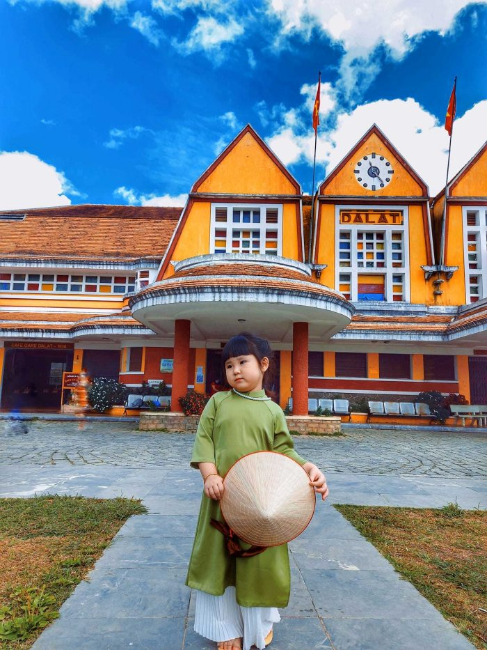
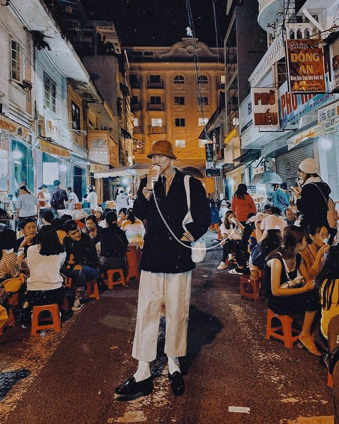
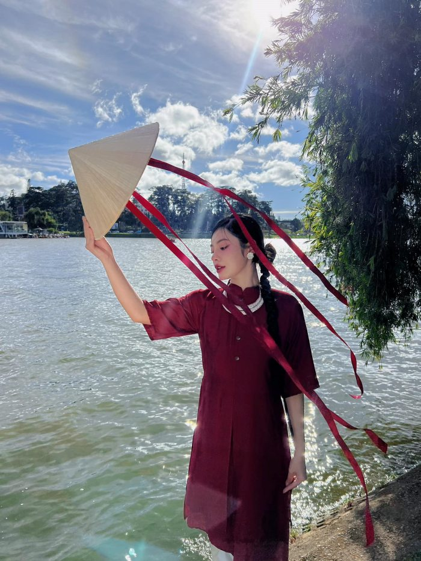
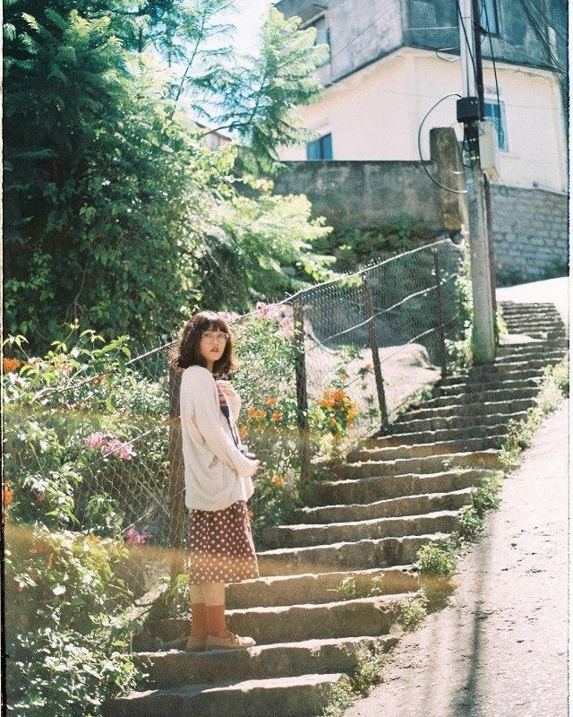
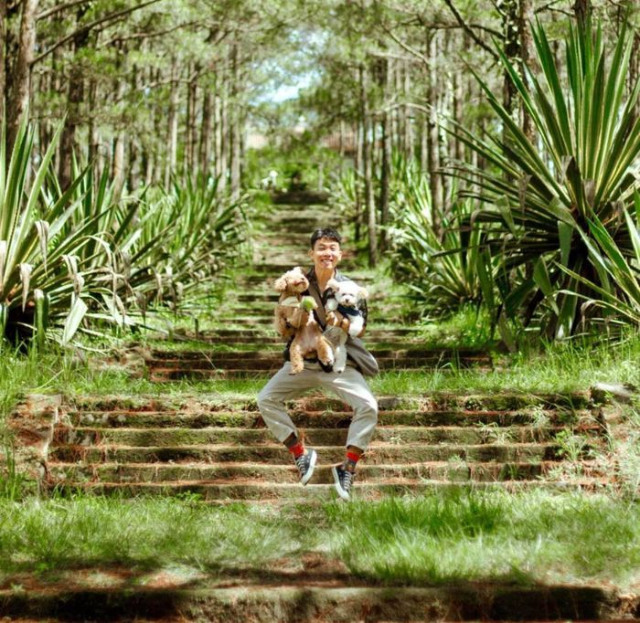
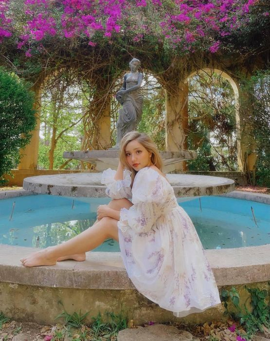
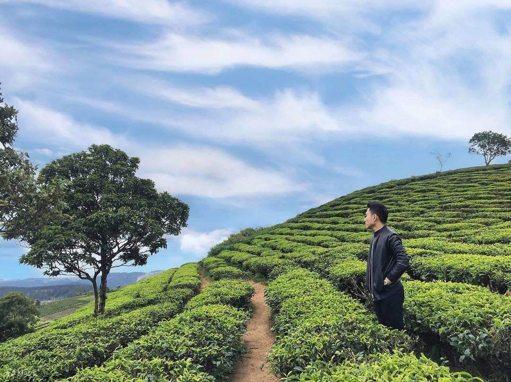

Thanh tịnh
Điểm đến lý tưởng cho những ai muốn tìm về chốn bình yên, tận hưởng khí hậu se lạnh và khung cảnh nên thơ.


Hiện nay du lịch một mình đang là xu hướng được nhiều người yêu thích và muốn thử. Hãy đánh dấu cuộc đời mình bằng một chuyến đi dành riêng cho bản thân với cẩm nang du lịch Đà Lạt một mình đầy thú vị ngay sau đây nhé! .
Đà Lạt Vlog | Đi một mình cảm giác sẽ ra sao.
Sô lô cùng bô lê rô
Các bản hit bất hủ từ chục năm trước. Cảm ơn Spotify đã đồng hành cũng chương trình.
Có lẽ là bài hát nổi tiếng nhất về Đà Lạt. Hình ảnh "thành phố nào nhớ không em, nơi chúng mình tìm phút êm đềm" đã in sâu vào tâm trí nhiều thế hệ.
Một bản nhạc tươi sáng, vẽ nên bức tranh Đà Lạt mộng mơ với hoa đào rực rỡ và những bước chân êm đềm trên lối cũ.
Bài hát diễn tả vẻ đẹp u buồn, tĩnh lặng của thành phố khi nắng chiều buông xuống bên Hồ Xuân Hương.
Một lời tâm tình gửi đến Đà Lạt – nơi có "khói sương lam mờ" và những kỷ niệm khó quên.
Mệt lắm rồi nha
Người lạ ơi ! Xin hãy cho tôi mượn bờ vai
Tựa đầu gục ngã vì mỏi mệt quá

Tự sướng
Thành phố ngàn hoa là thiên đường sống ảo với vô vàn góc chụp đẹp mê hồn. Dưới đây là một số địa điểm nổi bật mà bạn không nên bỏ qua khi đến Đà Lạt một mình.







